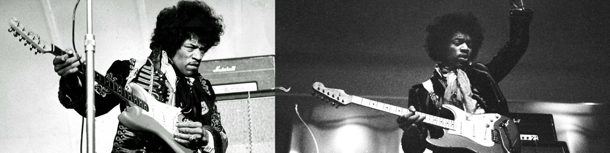

8 curiosidades de Jimi Hendrix
- Multitud de nombres A pesar que es mundialmente conocido como Jimi Hendrix, su nombre de nacimiento es Johnny Allen Hendrix. El primero no le duró mucho tiempo, pues a los cuatro años su padre lo cambió a James, que luego se convirtió en Jimi, por sugerencia de su manager, no sin antes intentar nombres artísticos como Maurice James o Jimmy James. Entre su familia, lo llamaban Buster.
- Le expulsaron del colegio Jimi decía que fue expulsado de la escuela por tomar de la mano a su novia blanca. Sin embargo, el director insistió que en realidad fue por sus continuas faltas y bajo rendimiento escolar. Nunca se sacó el graduado escolar. Curiosamente, después de su muerte, colocaron un busto suyo en la escuela.
- Fue totalmente autodidacta Jimi Hendrix se convirtió en uno de los mejores guitarristas sin ni siquiera estudiar música o saber leer acordes de guitarra. Fue un total autodidacta y quizá eso fue determinante para que fuese innovador en la música, pues construyó su propio camino. Su pasión por la música comenzó a los cuatro años cuando le obsequiaron una armónica, y consiguió su primera guitarra acústica a la edad de 14 años.
- Raíces diversas Este talento de la música tenía raíces diversas, parte indio americano (su bisabuela era Cherokee), irlandés (el esposo de su bisabuela), y africano (su abuelo).
- Era zurdo Jimi era zurdo, incluso, algunos decían que por su condición jamás podría tocar, pero su solución fue sostener la guitarra igual que un diestro pero con las cuerdas puestas al revés.
- Fan de Bob Dylan A pesar de que para muchos él era un ídolo, Hendrix también admiraba a otros, entre ellos Bob Dylan, de quien versionó All along the Watchtower, que el propio Bob reconoció como mejor que la suya.
- Se alistó en el ejército Jimmy estuvo alistado en el ejercito, pero no fue por decisión propia. Lo detuvieron por conducir un auto robado, allí le dieron a elegir entre pasar un tiempo como soldado o ir a la cárcel, y eligió la primera.
- Muerte prematura Hendrix murió a los 27 años por su adicción a las drogas y lo último que comió fue un sándwich de atún. Sólo fue capaz de producir tres álbumes de estudio y un álbum en vivo debido a su trágica muerte en 1970.